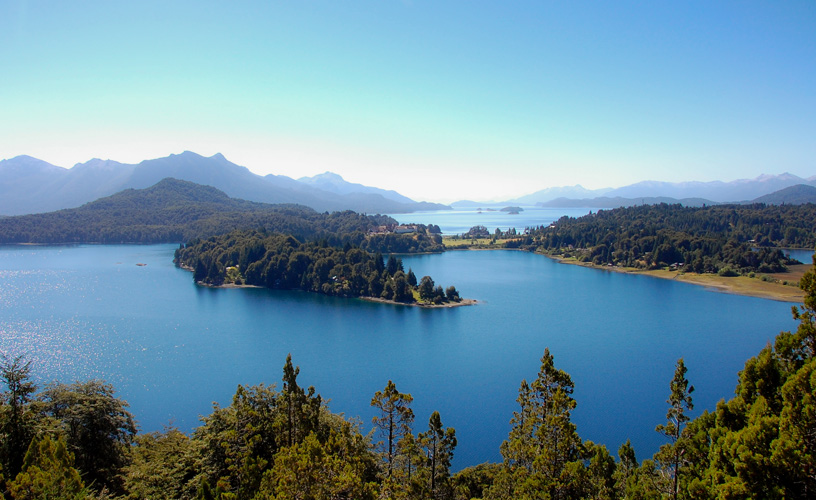
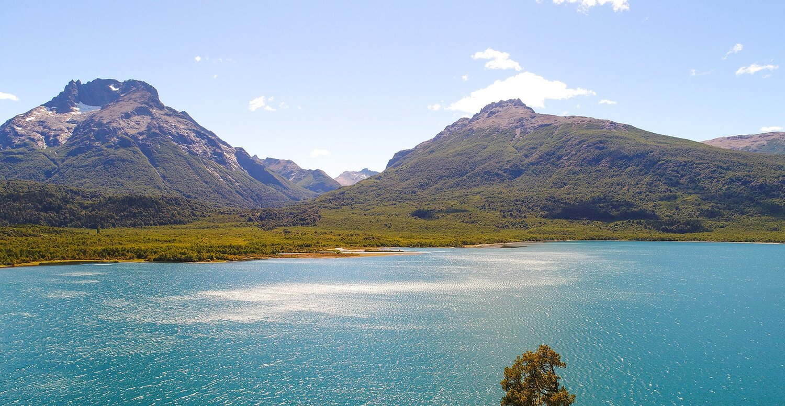
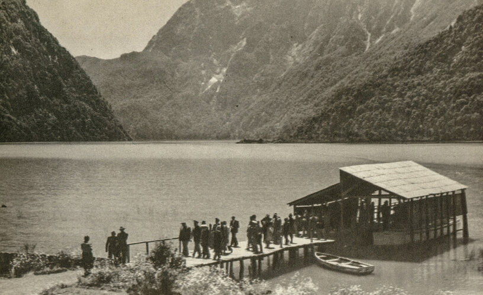
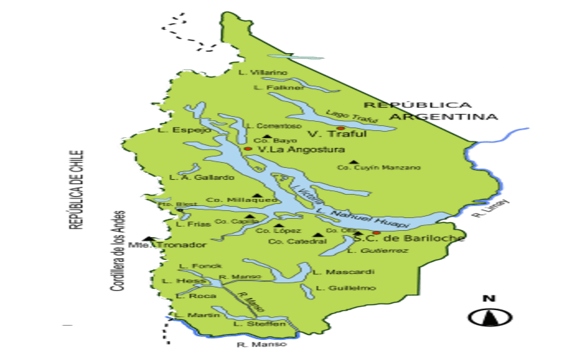

El Parque Nacional Nahuel Huapi, en la Patagonia argentina, es famoso por su espectacular paisaje de montañas, lagos y bosques. Su principal atractivo es el Lago Nahuel Huapi, ideal para actividades acuáticas. Las montañas, como el Cerro Tronador, ofrecen rutas de trekking y vistas impresionantes. El parque alberga una rica fauna, como huemules y cóndores, y cuenta con bosques de lengas y arrayanes. La ciudad de Bariloche, ubicada dentro del parque, es un importante destino turístico, especialmente para esquiar en el Cerro Catedral.

El Lago Nahuel Huapi es el mayor lago del Parque Nacional Nahuel Huapi, en la Patagonia argentina, con una superficie de más de 500 km². Sus aguas cristalinas son ideales para actividades como navegación, pesca y kayak. Rodeado por montañas y bosques, es un punto central para el turismo en la región, con vistas panorámicas y múltiples islas, como la Isla Victoria. Además, la ciudad de Bariloche se encuentra en sus costas, siendo un importante centro turístico.

Las Montañas andinas en el Parque Nacional Nahuel Huapi forman parte de la Cordillera de los Andes y crean un paisaje de picos nevados y valles profundos. Destacan por su belleza escénica y ofrecen oportunidades para trekking, escalada y esquí. El Cerro Tronador es una de las montañas más icónicas, conocida por sus glaciares y su cumbre nevada. También se destacan el Cerro Catedral, popular para el esquí, y otros picos que brindan vistas panorámicas y desafiantes rutas de montaña.
Historia

El Parque Nacional Nahuel Huapi tiene sus raíces en 1903, cuando el explorador y científico Francisco "Perito" Moreno donó unas 7.500 hectáreas al gobierno argentino con el propósito de preservar la naturaleza y fomentar la investigación científica. Moreno, quien había explorado profundamente la región andina-patagónica, entendía la importancia de conservar sus paisajes únicos y su biodiversidad. Esta donación se convirtió en el núcleo del futuro parque, que fue formalmente establecido en 1934 como el primer parque nacional de Argentina, marcando el comienzo de la conservación de áreas naturales en el país.

Con una extensión de más de 700.000 hectáreas, el Parque Nacional Nahuel Huapi protege un vasto territorio que incluye lagos, montañas, bosques y una variada fauna y flora. Durante el siglo XX, el parque se consolidó como un importante destino turístico, especialmente con el desarrollo de la ciudad de San Carlos de Bariloche, dentro de sus límites. El parque ha jugado un papel fundamental en la conservación de especies amenazadas y en la promoción del ecoturismo, equilibrando la protección del medio ambiente con el disfrute de sus paisajes por parte de los visitantes.